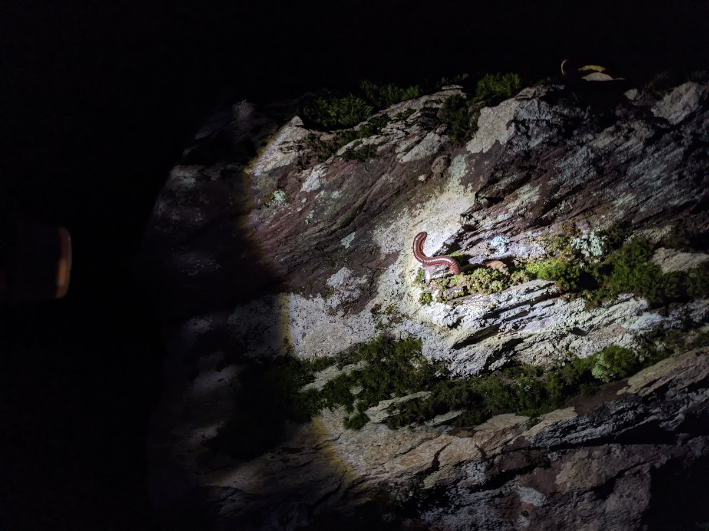
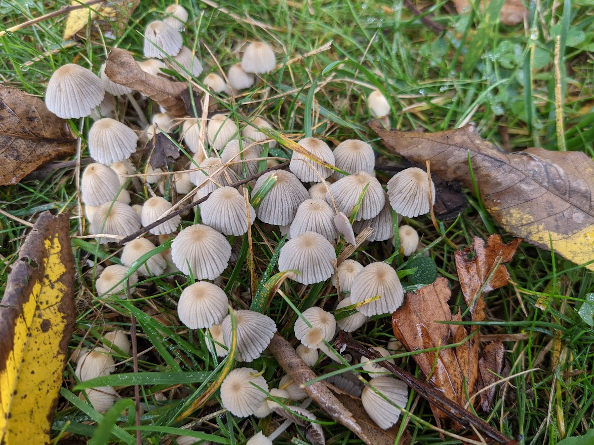
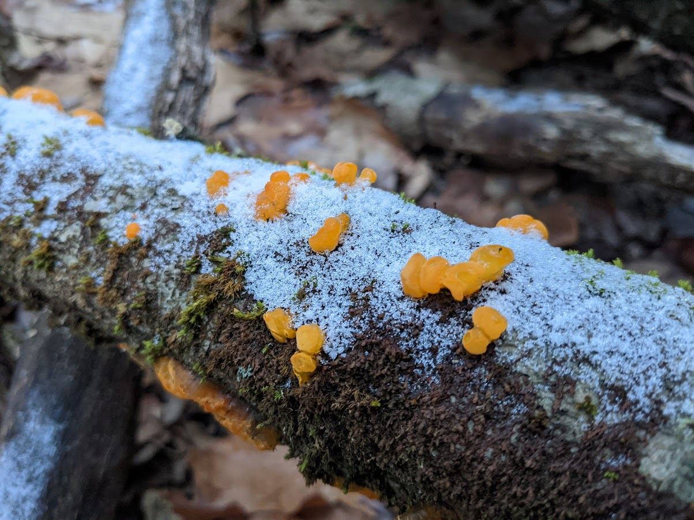

# Reflections
Reflection! Reflect, reflect, no tagbacks!
# Prompt 1
Discuss a piece that demonstrates teamwork. How did a classmate help you to maximize this piece? How did you accept revision suggestions?
I think I collaborated with Sooah on the Video Project really well. Though we were not able to record footage over break or during days when it rained heavily, I think in every other respect our planning was careful and detailed. Here you can see our pre-assignment for the video. The final result is pretty close to what we had originally planned, minus the interviewing.

Sooah's sister (Jinah!) recorded the footage for us. Once we cleaned up the clips, the final video was put together by Sooah and transcribed by me. I'm pretty proud of how it came out. In the pre-assignment stage, Mr. Weinstein suggested that we "add a woman to the show" in order to show how their hurdle form may differ. To this end, we asked Sarah F to join us for stretching, and other track members with varying levels of experience to join us.
# Prompt 2
Explore what you have learned about writing, reading, or some other related field.
Maybe it's easier as a beginner to not fear making mistakes. In Creative Writing, I felt that the relaxed nature of the class along with the policy of accepting resubmissions for full credit has given me the confidence I needed to feel comfortable with imperfection.
Though I mainly learned this in the context of programming, I discovered it's better to write something than to obsess over perfection and write nothing. This is especially important for large projects where getting external feedback is essential to fine-tuning the end result. This becomes apparent very quickly in game design. Many of my previous projects stagnated out of a fear of "not getting it quite right", which has led to a bunch of partially developed ideas, but nothing to show for it.
# Prompt 3
What is an important personal goal you hope to accomplish?
I want to make more things I can be proud of! I haven't fully decided on what I'm going to make, but I think it would
be a good chance to learn something new. I've been interested in mobile app development with
Flutter for a long time, so perhaps now would be a great chance to start.
Though I've made a few mobile apps with React Native, I haven't really expanded on it outside of robotics.
Shown below is a behind-the-scenes look into one of the apps I worked on for the Robotics team, the Scouting App.
Instead of manually filling out forms, members of our robotics team can now input all their data into one centralized app!
The app even bundles it up in a neat and tidy spreadsheet, ready to be airdropped or emailed at your whims.
This is a project I'm truly proud of. I want to be just as passionate and inspired for my next work.
# Prompt 4
Where do you see yourself in 5, 10, or 20 years?
In twenty years I see myself living in an ultra cozy apartment, wrapped in whatever number of blankets I can find.
I'll buy all the things I want! Silly mugs, funny neckties, weighted blankets... I'll learn to cook a few dishes really
well so I can eat the same thing every night, and live cheaply. My clothes will all be many years old, divided by what
patterns they have on them.
I'd like to have a whole room to keep cool stuff,
where I can store all my favorite memories collected from over the years. A little hideaway from the outside world:
isolated yet well ventilated and properly lit.
# Prompt 5
Reflect on hybrid learning, the pandemic, and other related ideas.
I was never really given a choice in which extracurriculars I wanted to do; everything was already decided for me with little room for change. This became particularly bad in my freshman year, where every day was filled with whatever programs were available. I threw myself into clubs as a way to escape, but that only pushed the programs back by a few hours.
Unlike many of my friends, I actually became happier during the pandemic. Every single program that I had previously been obligated to had been cancelled, giving me the time to do what I really wanted. In April I used my savings to buy the Pixel 4A, which is known for it's camera.
  Hybrid learning was a weird experience. Since half the class would always be remote, every test became open book. I didn't see much of my friends except for Ethan, with whom I shared most of my classes. Even before the pandemic, I often spoke to my friends through Discord, so I didn't actually experience a big shift in that area. Weirdly enough, I actually grew much closer with my friends! I also found it much easier to make friends now that everyone's become a little bit more online.